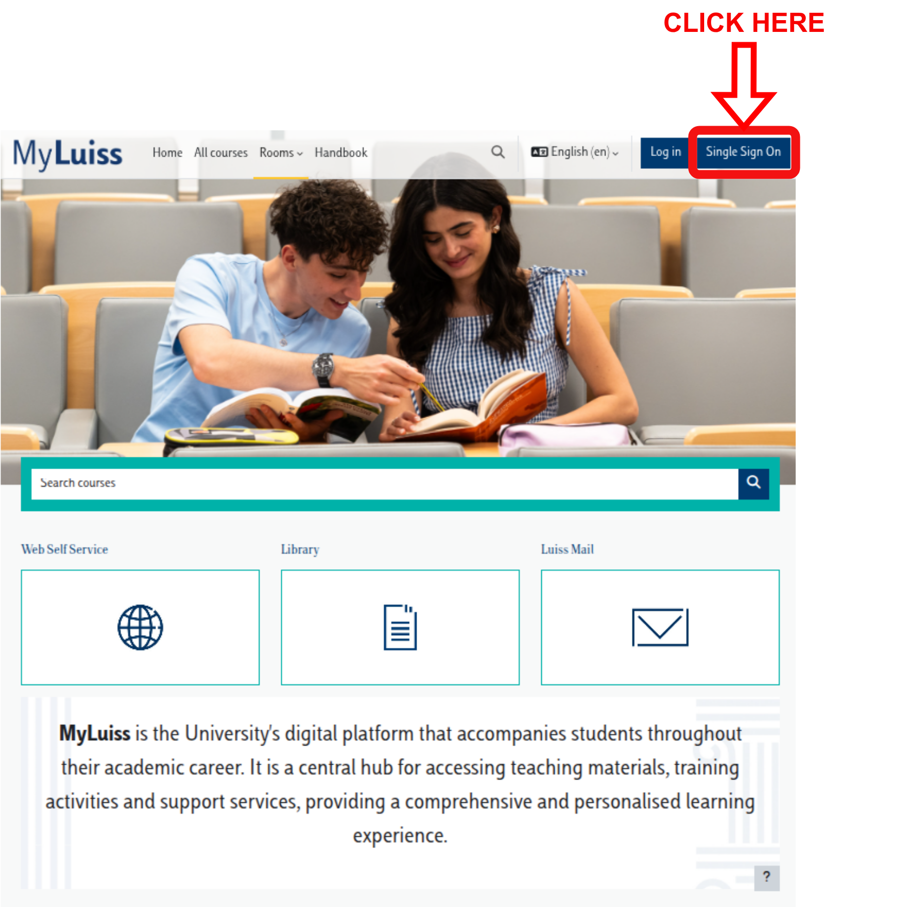
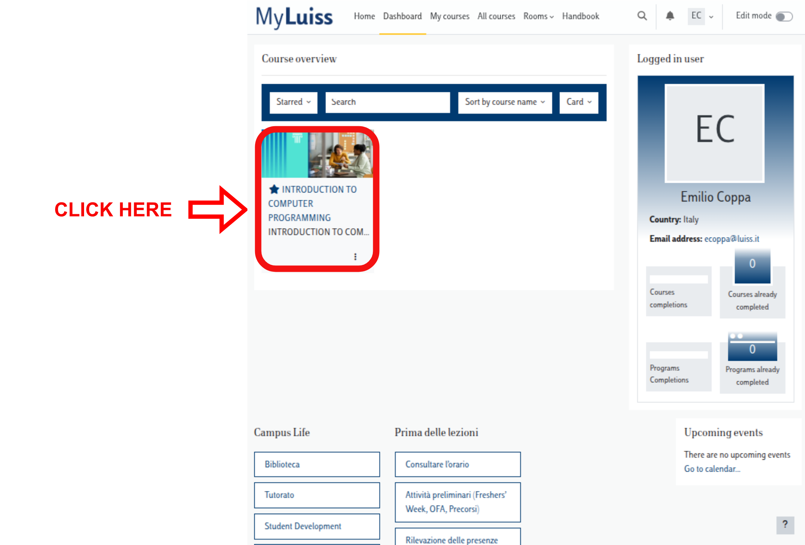
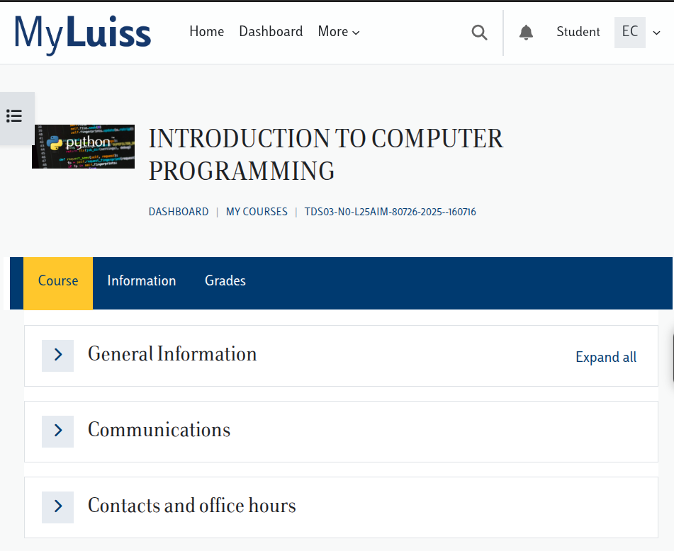
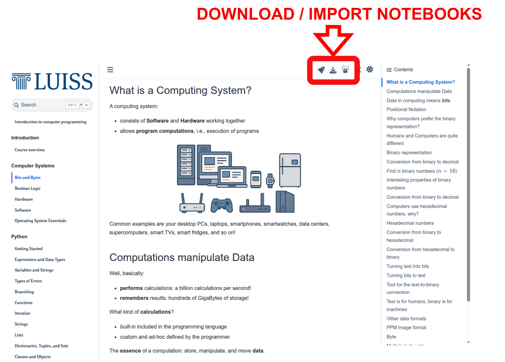
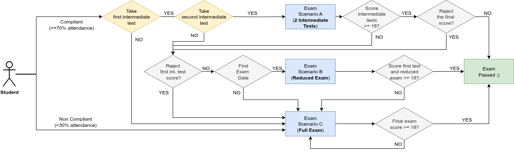
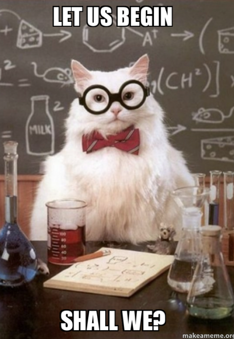

Course overview#
Introduction to computer programming
Management and Artificial Intelligence
Important Resources#
Web Resources you should have access to:
e-Learning platform#
MyLUISS is our e-Learning platform: It is important that you get access!
You’ll find there:
Slides covering:
theory
exercises
Details on exam dates, reservations, results (besides standard Luiss channels)
Communications from teacher and teaching assistants
A live and editable version of the course material is available at https://introcp.github.io/
{kind=link}

{kind=link}

{kind=link}

Access the live material#
Material will be made available on MyLUISS via slides. However, you can have access to:
browsable content of the course
editable notebooks with theory materials
notebooks with exercises (easy to download or import on Google Colab and Jupyter Lite)
by accessing https://introcp.github.io/
{kind=link}

Teachers#
Emilio Coppa
|
|
Alessio Martino
|
Teaching assistants#
|
Giorgio Piccardo
|
|
|
Ettore Di Micco
|
Course Goals#
The course is intended to teach basic programming concepts to students with no prior coding experience, developing an attitude towards computational thinking.
It will provide the students with:
an understanding of the role that computation can play in solving problems
the ability to write small programs to accomplish useful goals
Course Roadmap#
The course will familiarize the students with computer programming and will cover the following topics:
Binary numbers and boolean logic
Computer hardware
Computer software
Operating Systems essentials
Introduction to programming languages
Python basics
Variables, data types, expressions
Branching
Functions and modules
Recursion
Strings and Lists
Dictionaries, Tuples, and Sets
Object-oriented programming and classes
Organization#
Lectures + Lab Sessions: Laptops at your fingertips, always!
Monday @ 14:45-16:15 (90 minutes)
TD2a, TD2b @ Viale Romania
(often) Theory lectures & some exercisesTuesday @ 11:45-13:15 (90 minutes)
TD2a, TD2b @ Viale Romania
(often) Theory lectures & some exercisesWednesday @ 14:30-15:45
AT01 @ Viale Romania
(often) Lab Session with TAFriday @ 19:15 - 20:30 (75 minutes)
TD0 @ Viale Romania
(often) Lab Session with TA
Proposal to change the Friday slot#
If you agree, we can ask the offices to move the Friday slot from:
To:
Exam#
Written exam:
Coding (50% of the overall grade)
Multiple-choice Tests (50% of the overall grade)
In light of the LUISS Continuous Assessment verification method, we will be having 2 in itinere exams:
First Intermediate Test (week 7: 20-24 October)
60 minutes, 8 theory quizzes, 2 coding exercises
Second Intermediate Test (week 13: 1-5 December)
75 minutes, 7 theory quizzes, 3 coding exercises
Each intermediate test is a short exam on the topics covered so far. It will consist of a mixture of coding exercises and theory questions (multiple-choice quiz). Note that:
the sum of the coding parts between the two tests yields 31 points
the sum of the theory parts between the two tests yields 31 points
NOTE: you must be a compliant student (at least 70% of attendance) to take the intermediate tests.

Exam scenario A: compliant student passing both tests#
A compliant student taking the two intermediate tests has passed the exam if:
the sum of the coding parts from the two tests is greater than 18
the sum of the theory parts from the two tests is greater than 18
The final exam score is computed as the average of two scores.
The student can:
accept the score:
GREAT!
the student has to book in the first exam date
there is no need to take the exam during the exam date!
reject the score of the second test: see Exam scenario B
reject the score at both tests: see Exam scenario C
Exam scenario B: reduced exam#
A compliant student failing (too low score) or missing the second test can take a reduced exam (which is similar to the second intermediate test: 75 minutes, 7 theory quizes, 3 coding exercises) during the first exam date.
The student passes the exam if:
the sum of the coding parts from the first test and the reduced exam is greater than 18
the sum of the theory parts from the first test and the reduced exam is greater than 18
The final exam score is computed as the average of these two scores.
The student cannot reject the final exam score if it is equal to or greater than 18.
Students failing the exam: see Exam scenario C
Exam scenario C: other situations#
Students that:
are not compliant
are taking the exam after the first exam date
are compliant but missed both tests
have taken the tests but failed both tests
have rejected the score of both tests
have attempted the reduce exam (scenario B) and failed it ìt
have to take the full exam (120 minutes):
15 theory quizes (20 minutes)
5 coding exercises (100 minutes)
The final exam score is computed as the average of two parts (theory and coding).
Students cannot reject the score if it is equal to or greater than 18.
{kind=link}
